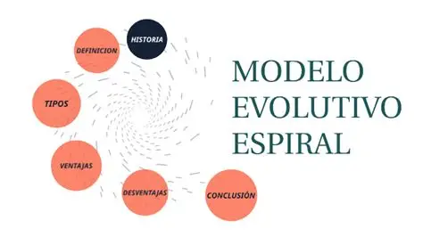

1. Historia
Introducida por Barry Boehm en 1986, combina la estructura de la cascada con la naturaleza iterativa de prototipos, centrada en reducir la incertidumbre y el riesgo.

2. Etapas por cada Ciclo
- Determinación de Objetivos: Definir metas y restricciones.
- Análisis de Riesgos: Identificar qué puede fallar y crear prototipos.
- Desarrollo y Pruebas: Construcción y verificación del software.
- Planificación: Revisión del ciclo y preparación del siguiente.